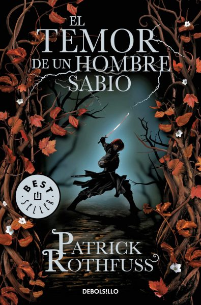
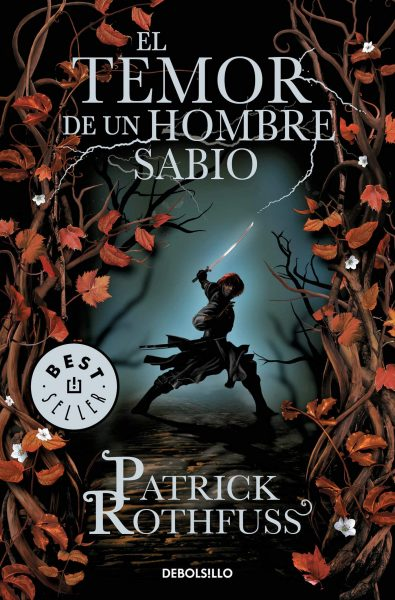
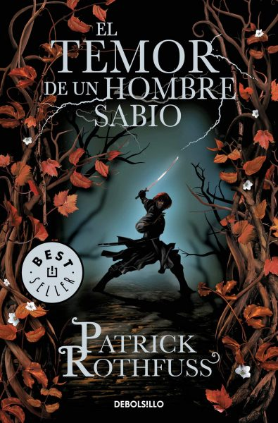

atras
atrasatras
-El Señor de los Anillos, la famosa obra literaria escrita por J.R.R. Tolkien, ha capturado la imaginación de millones de lectores en todo el entorno. Esta épica historia de fantasía nos sumerge en un entorno lleno de magia, aventuras y personajes inolvidables.
- El Temor de un Hombre Sabio es la segunda entrega de la trilogía de Crónica del Asesino de Reyes, escrita por Patrick Rothfuss y publicada en el año 2011. Este libro sigue la historia de Kvothe, un personaje legendario que se esconde bajo un nombre falso en una posada perdida. Cuando un viajero llamado Cronista lo reconoce, Kvothe accede a contar su historia durante tres días. A lo largo de la narración, el lector descubre la verdadera identidad de Kvothe y los eventos que lo llevaron a convertirse en el héroe o villano de miles de historias.